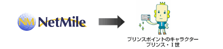
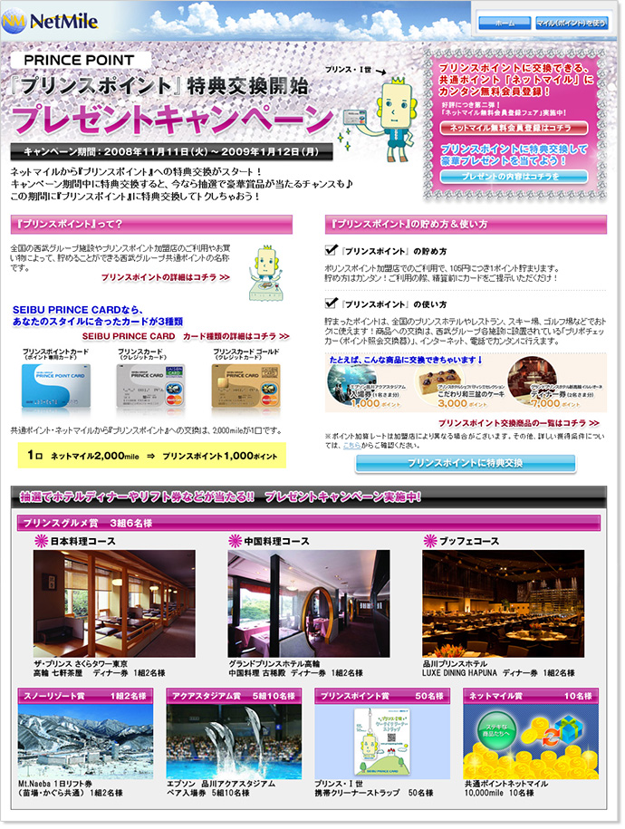

ネットマイル社、西武ホールディングス社と提携
西武グループ共通ポイント『プリンスポイント』への交換を開始
～ 豪華賞品が当たる！特典交換開始キャンペーンも同時開催 ～
インターネット上の共通ポイントプログラムを運営する株式会社ネットマイル（本社：東京都千代田区、代表取締役社長：山本雅、以下、ネットマイル社）は、株式会社西武ホールディングス（本社：埼玉県所沢市、代表取締役社長：後藤高志、以下、西武ホールディングス社）と提携し、同社のポイントプログラム『プリンスポイント』との特典交換サービスを、本日2008年11月11日（火）14：00より開始いたします。
『プリンスポイント』は、全国の西武グループ施設やプリンスポイント加盟店のご利用やお買い物によって貯めることができる西武グループ共通ポイントです。貯めた『プリンスポイント』は、全国のプリンスホテルの宿泊券や、スキー場・ゴルフ場などのご利用、レストランのお食事券、お買物券など、西武グループが展開している多様なサービスと交換することができます。
『ネットマイル』から『プリンスポイント』への特典交換サービス概要
| 交換開始日 | 2008年11月11日（火）14：00より開始 |
|---|---|
| 交換条件 | 「SEIBUプリンスカード」をお持ちのネットマイル会員であること。 ※「SEIBUプリンスカード」は、「プリンスポイントカード、プリンスカード、プリンスカード ゴールド」の3種類のカードの総称です。 （ネットマイルから『プリンスポイント』への移行のみ） |
| 交換レート | ネットマイル2,000mile（1口） → 1,000ポイント |
| 最低交換数 | 1口から移行可能(2,000mile ＝ 1,000ポイント） |
またサービス開始を記念して、2008年11月11日（火）から2009年1月12日（月）まで、ネットマイルからプリンスポイントに特典交換をされた方の中から抽選で、豪華賞品が当たる「『プリンスポイント』特典交換開始記念 プレゼントキャンペーン」と、プリンスポイント会員の方がネットマイルへの会員登録で、もれなくプリンスポイント100ポイントがもらえる「『ネットマイル』新規会員登録でプリンスポイント100ポイントプレゼントキャンペーン」を実施いたします。
『プリンスポイント』特典交換開始キャンペーン概要
1. 『プリンスポイント』特典交換開始記念 プレゼントキャンペーン
| 期間 | 2008年11月11日（火） ～ 2009年1月12日（月） |
|---|---|
| 内容 | キャンペーン期間中、ネットマイルから『プリンスポイント』に交換された方の中から、抽選で豪華賞品をプレゼントいたします。 【プレゼント賞品】
|
| URL | http://www.netmile.co.jp/cpn/spend_081111/ ※キャンペーンページは11月11日（火）14：00よりご確認いただけます。 |
2. 『ネットマイル』新規会員登録でプリンスポイント100ポイントプレゼントキャンペーン
| 期間 | 2008年11月11日（火） ～ 2009年1月12日（月） |
|---|---|
| 内容 | 期間中、プリンスポイント会員の方が、ネットマイルに会員登録をすると、もれなくプリンスポイント100ポイントをプレゼントいたします。 |
| URL | http://www.netmile.co.jp/enq/enquete.htm?q=12v2v2vDLBf2 |
『プリンスポイント』特典交換開始記念 プレゼントキャンペーンページ
ネットマイル社ではこれからも、累計登録会員数約396万ユーザーの利便性向上を目指し、ユーザーサービスの拡充に努めてまいります。
【株式会社西武ホールディングスについて】 http://www.seibu-group.co.jp/shd/index.html
西武鉄道、プリンスホテルを中核会社に、運輸、レジャー・サービス、建設、不動産など、暮らしに密着した事業を幅広く展開している企業グループの持ち株会社。
新生・西武グループとしての始動に際し、2006年3月、グループの経営理念・目指す方向性を示す「グループビジョン」を制定。お客さまの「行動」と「感動」を創りだすことを基本方針として「でかける人を、ほほえむ人へ。」をスローガンに積極的に事業活動を展開している。
| 社名 | 株式会社西武ホールディングス |
|---|---|
| 代表取締役社長 | 後藤 高志 |
| 所在地 | 〒359-0037 埼玉県所沢市くすのき台1丁目11番地の1 |
| 資本金 | 500億円 |
| 設立 | 2006年2月3日 |
| サービスサイト | http://www.princepoint.jp/ |
【株式会社ネットマイルについて】 http://biz.netmile.co.jp/
2000年11月設立。三井物産株式会社の連結子会社で、インターネット上の共通ポイントプログラム「ネットマイル」を運営。同社のIT事業戦略の一端を担う。
「ネットマイル」は、2001年4月にサービスを開始。累計加盟サイト数1,000サイト、累計登録会員数約396万人（2008年10月末現在）の規模は、日本最大級。2007年12月、インターネット業界最大規模のオンラインイベントである『 Web of the Year 2007 』ポイント部門で第1位に選ばれる。
| 社名 | 株式会社ネットマイル |
|---|---|
| 代表取締役社長 | 山本 雅 |
| 所在地 | 〒101-0054 東京都千代田区神田錦町3-26 一ツ橋 SIビル 9F |
| 資本金 | 396百万円 |
| 設立 | 2000年11月7日 |
| 事業内容 |
|
| 出資企業 | 三井物産株式会社、トランスコスモス株式会社 他 |
| サービスサイト | http://www.netmile.co.jp/ |
【当リリースに関する報道関係者お問合せ先】
株式会社ネットマイル 広報担当 ： 村井
Email ： 
TEL ：